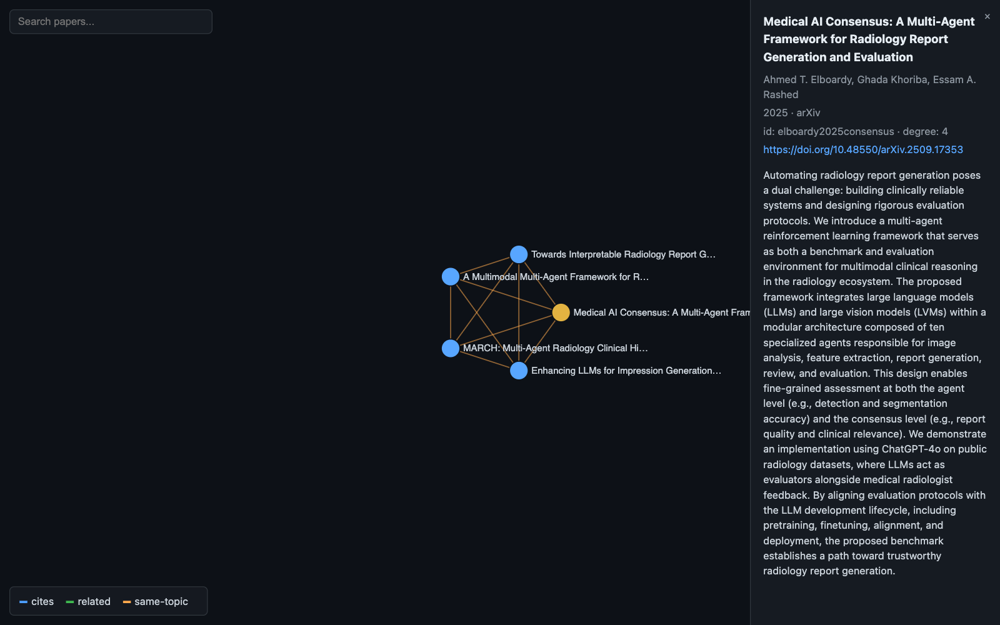

Unedited terminal recordings of research-harness driving oh-my-pi. Real agent turns, real output, no staged replay — every command typed here is a sentence a researcher would actually write.
1600x1000 · 1x playback · open-access sources onlyThis capture is docs/RUNBOOK.md performed live: both Part 0 environment gates, then Part 1 as far as the first screening pass. A researcher opens with one plain sentence — "I'm starting a scoping review on whether teams of LLM agents that talk to each other make hospital diagnosis better than a single model. Where do I start?" — then imports a real 50-record PubMed export and works it down to a PRISMA diagram. Every number on screen is computed during the take, out of the review store as it fills up.
research doctor and the 109-test suite, the two gates the runbook makes you pass before starting.scope.md, with the inclusion gate the reviewer will be held to./help — the capability guide: every command, what it does, when you would reach for it. The bar at the bottom tracks the active project and screening progress all the way through.0 duplicate(s) marked out (correct for a single-database export).maybe for full text, and a genuine tension between scope.md and SCREENING.md raised rather than papered over. Nothing is written until the researcher confirms./prisma — the flow diagram derived from record state, with the arithmetic line that has to balance.The same plain-language posture, aimed at the second brain: "here's my folder of papers on multi-agent medical AI — add the most relevant ones to my paper graph and tell me what connects them", then "export that view so I can explore it myself".
One self-contained HTML file: vanilla-JS force-directed canvas, node size by degree, edge colours by type,
search, drag/zoom/pan, click for metadata. No external assets — it works from file://.

application/octet-stream, so a committed MP4 cannot be watched in place.
GitHub Pages serves them as real video/mp4, so they play here at full quality.